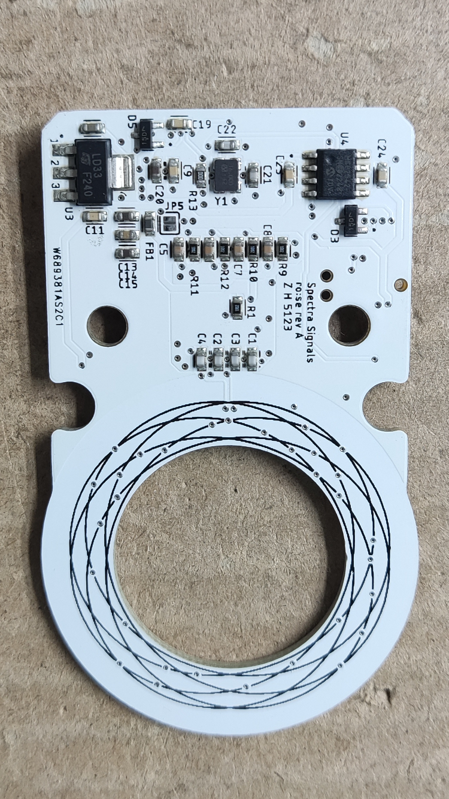
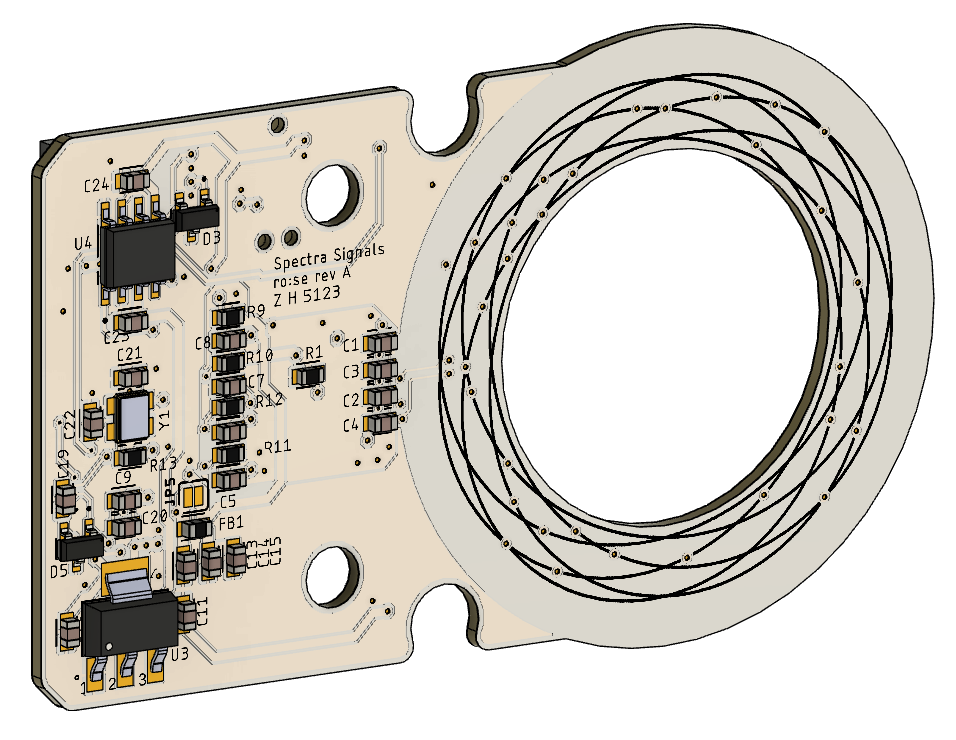
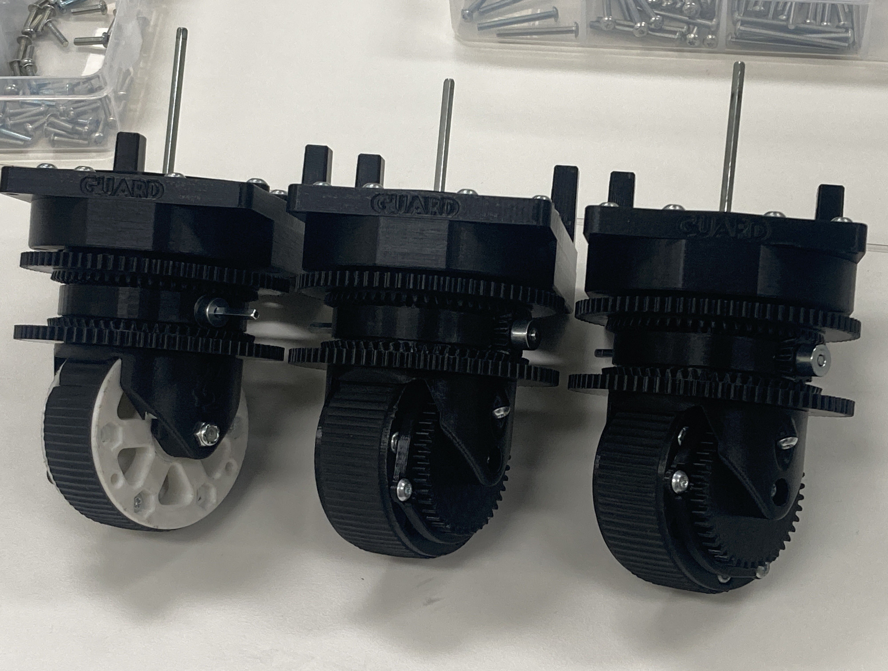

16/01/2024
I am super excited to have built a robot in 3 days alongside
a group of great friends from across Australia. It was challenging, but lots of fun, and very rewarding.
I'm glad to see that teams are finding our build valuable! I think it really demonstrates that low-resource teams can
actually contribute a lot, if they have an elegant design. I'm proud to have come up with a robot architecture as elegant
as this.
It's a lot easier to put something together than it is to explain every step of how you did it. I think the biggest challenge in
this project was actually documenting and disseminating the design and build process in an understandable way. I am very lucky
to have had Hayley on the team to help make explanation videos (available here)
and documentation (which we all worked on, but
she formatted everything nicely), which really helped me feel like we could deliver the impact that we wanted to.
A big challenge, which I also find in production environments, is that you have to explain technical details to a less technical audience.
Most of our audience don't know much about sensors -- that's why we made the robot -- so we had to explain it from the beginning.
I think the video format helps visually show how our sensors worked, and I really hope this helps young teams feel more comfortable
with using sensors in their robots.
Overall, I'm really proud of what we've accomplished, and I'm really excited to do it again next year. :)
15/01/2024
PCBWay have completed the order for the resolver boards, and have shipped them.
20/12/2023
Since the 31st of October, I've been working away at a more accurate way for swerve drive robots to utilise odometry. Typically,
since swerve modules need to rotate continuously, rotation sensors aren't placed on the drive wheel. This can either be done
with a slip ring to power, and pass signals to, an encoder, or to perhaps have a coaxial optical encoder with a marked pattern
on the wheel.
I've chosen to design a low profile (<10mm) rotary sensor that can be placed in the wheel well of a swerve module with a small,
low cost slip ring to pass CAN signals between each module and a control unit. The advantage of the PCB based inductive resolver
is the thin packaging, resistance to stray magnetic fields, and absolute rotation sensing that makes it useful for many applications.
To see an industrial application for swerve modules, see the Boston Dynamics robot,
Stretch.
I have completed the EDA design for the sensor board, and have contracted PCBWay to manufacture ten samples.
Front side of board, showing TX coil pattern, STM32G431 MCU, analog front-end and inductive IC, status LEDs, debugging pins, poke-home connectors, and TVS diode.

Rear of board, showing RX antenna pattern on silkscreen, CAN transciever, crystal oscillator, LDO, and TVS diodes.
Once the boards arrive, I hope to demonstrate them on the VEX U robots at the World Championships in April and make them available
for other teams to purchase and use.
09/05/2023
This week, over a couple of hours, I designed a simple hall effect sensor board that can be used as a magnetic limit switch for robots.
It's a nice and simple project that would be great as a tutorial for beginners getting into PCB design, so I also wrote a
tutorial for my robotics team's Confluence site, going over the
process from part selection, to schematic, to layout.
I also checked out how much it would cost to make on JLCPCB. At $5~$10 per board it's comparable to buying one off the shelf
from the regular robotics vendors (if they're in stock).
04/05/2023
I worked on this from early March to late April, in preparation for the 2023 VEX World Championship in Dallas, TX.
3D renders are nice, but I always feel more authentic with photos of real hardware.
The name GS-6X implies it's the 6-and-a-half(th) iteration of the GUARD swerve module. It's been a long journey I've been working at since March of 2022,
and it still isn't really over.
This particular version mitigated some of the problems in the previous version, GS-5, which we used at the Australian Nationals competition. GS-5 had
a big problem putting enough torque down since the 3D printed ring gears would expand and slip, even when just driving on foam tiles. It also had a lot of backlash
between the wheel and the motors, which wouldn't have helped our autonomous routine (if we had one).
The solution was to use bevel gears for the differential. This reduced the number of gears, helping backlash, and forced the radial forces against the groove
that the ring gears sit in, so they could not come out of engagement. This worked well enough, and got us a robot that could drive in all directions.
Unfortunately the point of the differential swerve drive is that you have full power utilisation, but because the ring gears just sat in grooves full of grease
(rather than rolling element bearings) the efficiency was on the order of 60%. With only 11W per motor (88W total), it made the performance suffer, and we had
to drop the RPMs by a third to stop the motors from overheating just from driving.
Probably the most valuable lesson I've learned is how helpful it is to have multiple people helping you solve a problem. The value of taking the time to educate and involve other people in your project is double the effort you put in. I don't think the robot would have driven if not for the help of my team members.
In any competition, like racing or robotics, you're often limited to a certain amount of money you can spend or the amount of power your motors can output.
With that constraint, your goal should be to get as much out of your resources as you can.
I'm not upset about the outcome of the GS-6X. It got the robot to move, and most importantly it taught us about efficiency. Given that we designed something that
was almost entirely 3D printed and very low cost, we've found where the tradeoffs between cost and performance really demand some more investment. We also know
what we can get away with if we are designing something that doesn't need as much efficiency.
The next step will be to design a fully rolling-element module (with a target of say 85% efficiency), and I plan to do this as a collaborative and educational
opportunity so new members can get some interesting work on their plate.
Zac Hah 2024